Nesta UFCD aprendemos técnicas para demonstrar visualmente: direção, movimento e ritmo. Aprendemos também a criar designs simétricos e assimétricos e abordamos as paletas: monocromática, análoga, complementar, semi-complementar e triádica.
Abaixo encontram-se os posters que realizei nesta UFCD. O primeiro simboliza direção e a sua paleta é monocromática; o segundo simboliza movimento e as suas cores são análogas; o terceiro simboliza ritmo e tem cores complementares; o quarto é um poster simétrico colorido com uma paleta semi-complementar; o quinto poster é assimétrico e a sua paleta é triádica.
Ainda nesta UFCD, foi abordada a tipografia e realizámos os posters abaixo. O poster da esquerda pretende ilustrar o conceito "À Margem"; O poster do meio simboliza o conceito "Entrelaçados"; O póster da direita pretende ilustrar o conceito "Indiferença".
As imagens presentes nesta secção foram criadas no Adobe Photoshop (1 e 2) e no Adobe Animate (3) após terem sido desenhadas por mim no computador com o rato.
Nesta UFCD realizámos várias animações. Fomos introduzidos à UFCD através do Stop Motion, desenhámos em várias folhas de papel para criar animações. Posteriormente, avançámos para animações em Photoshop. Criámos ainda animações no Abode Animate.
Em Design Multimédia, tivemos como desafio a criação da nossa marca própria. Abaixo encontram-se: o símbolo da marca, o logotipo e a logomarca (por ordem).
Tivémos ainda de criar produtos de merchandising para a nossa marca através de mockups. Uma vez que gostei particularmente desta tarefa, tomei a iniciativa de mandar imprimir as t-shirts que desenhei.
Comecei por fazer os desenhos à mão com referências, depois trabalhei/melhorei os mesmos no Adobe Illustrator.
A marca que criei para esta UFCD era uma marca desportiva e agora utilizo as T-shirts que desenhei para praticar desporto.
 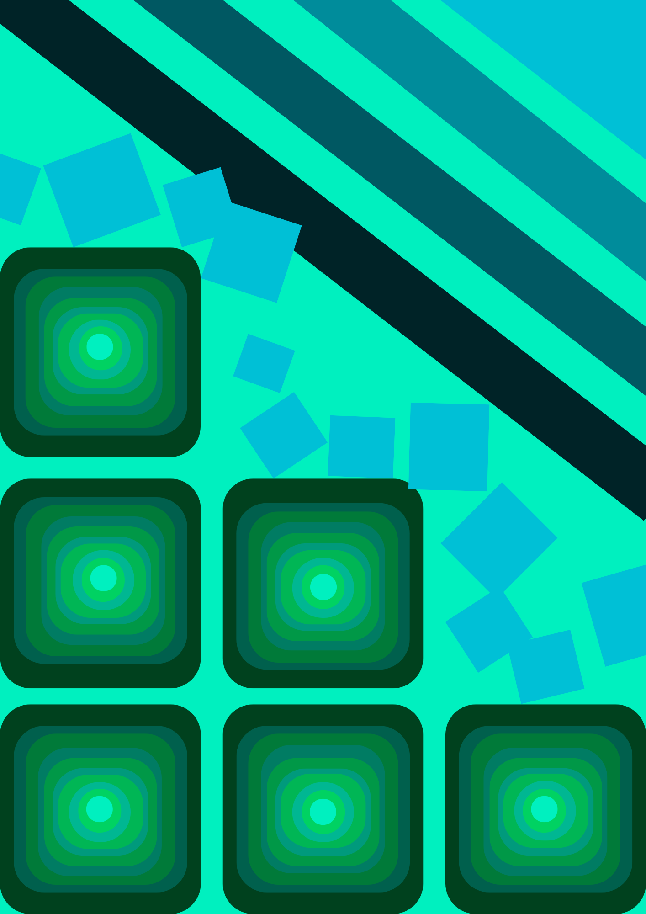
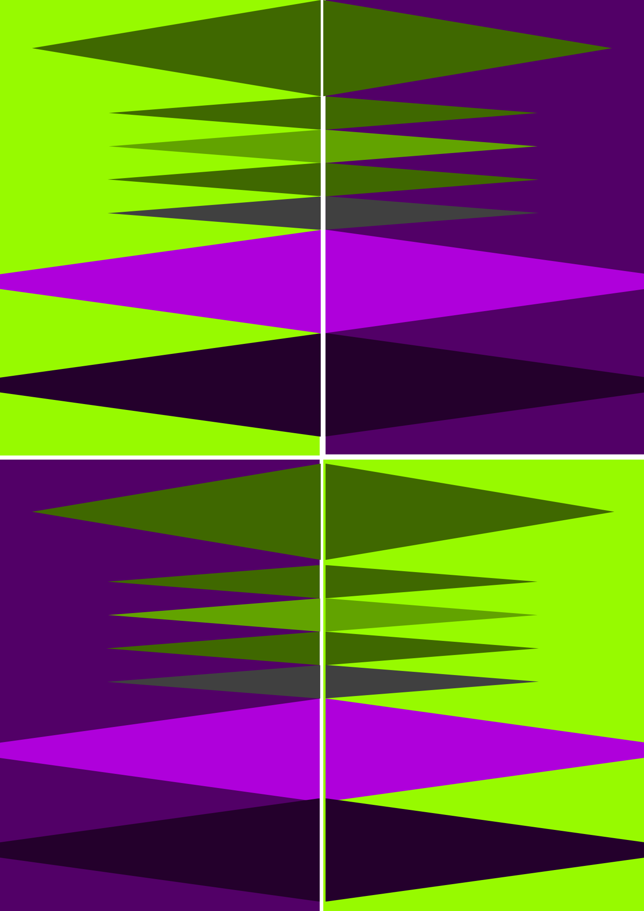
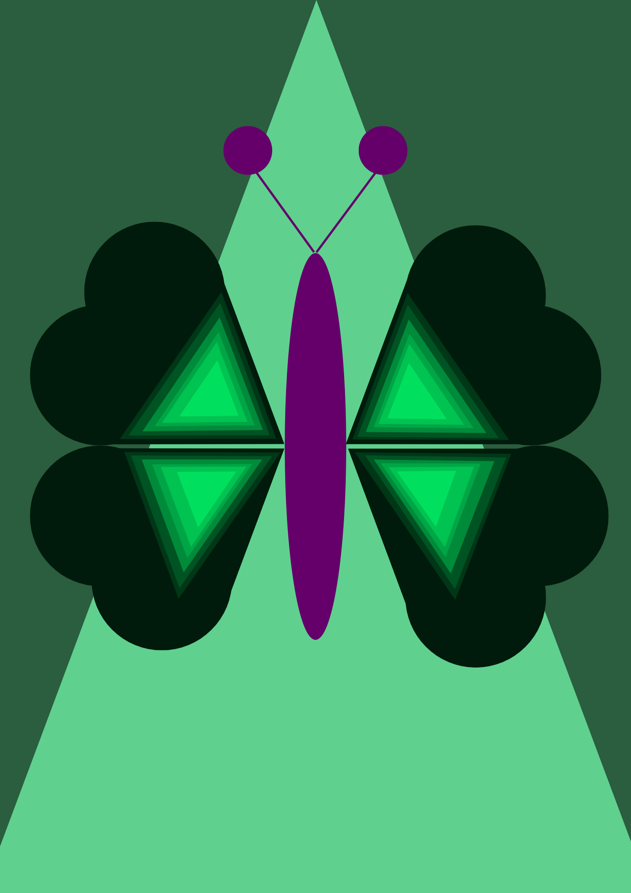
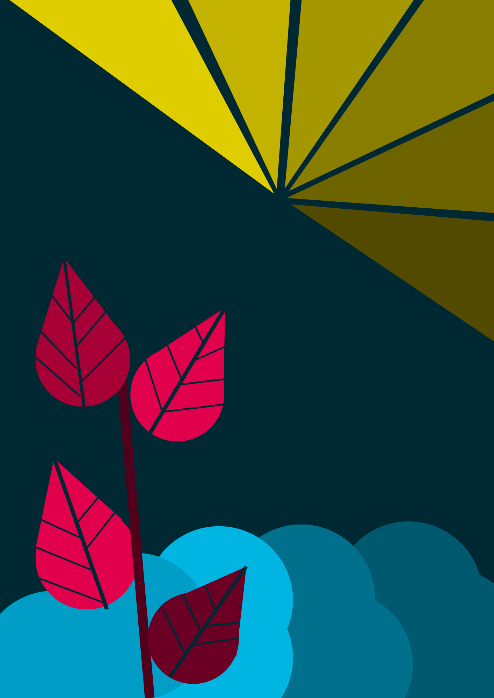
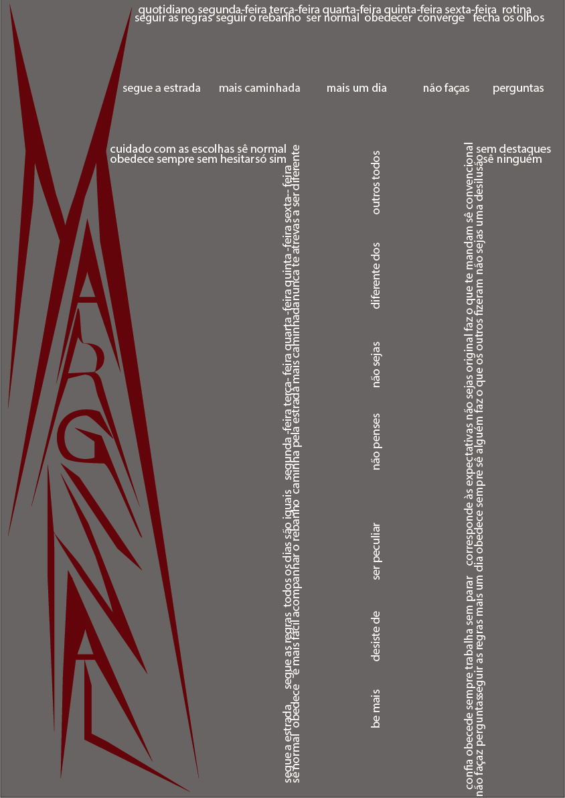
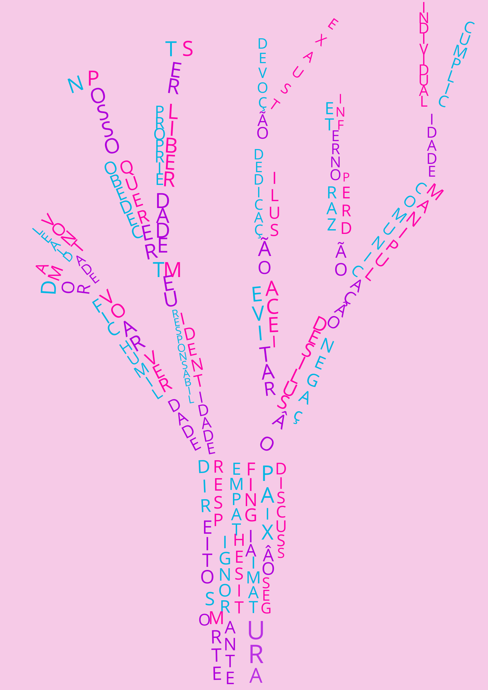
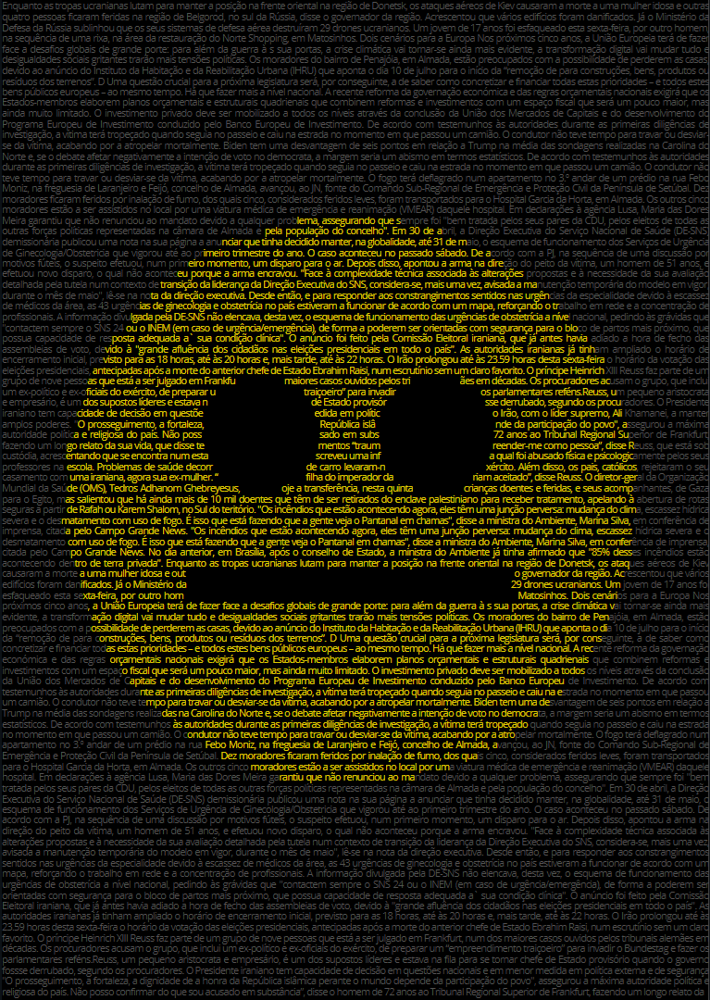
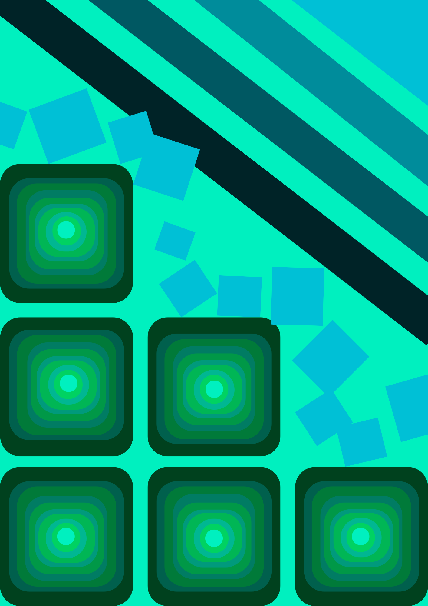
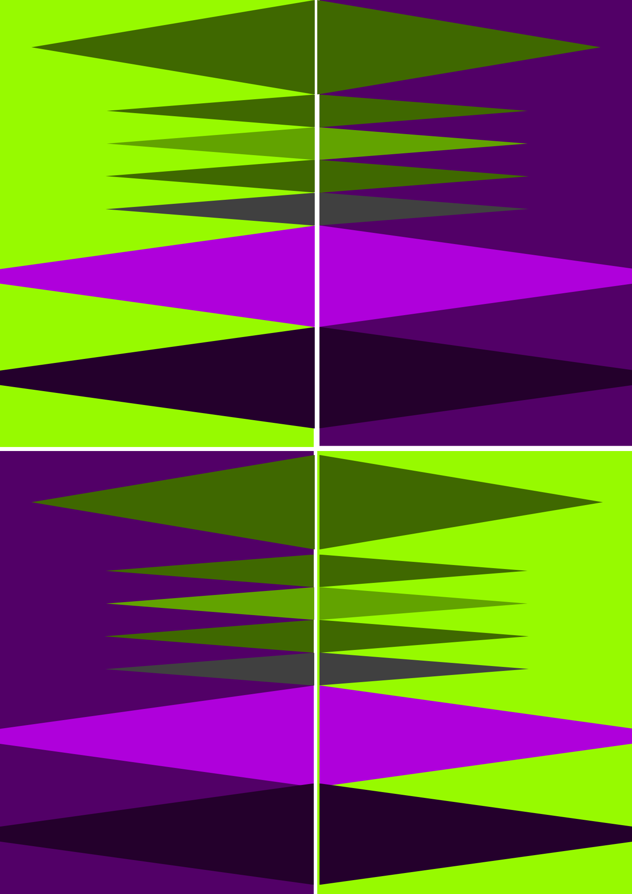
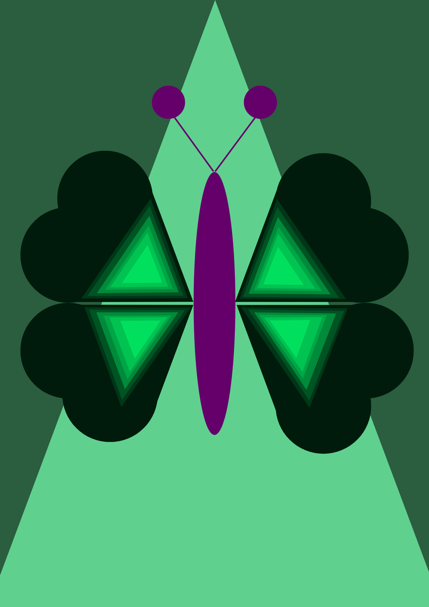
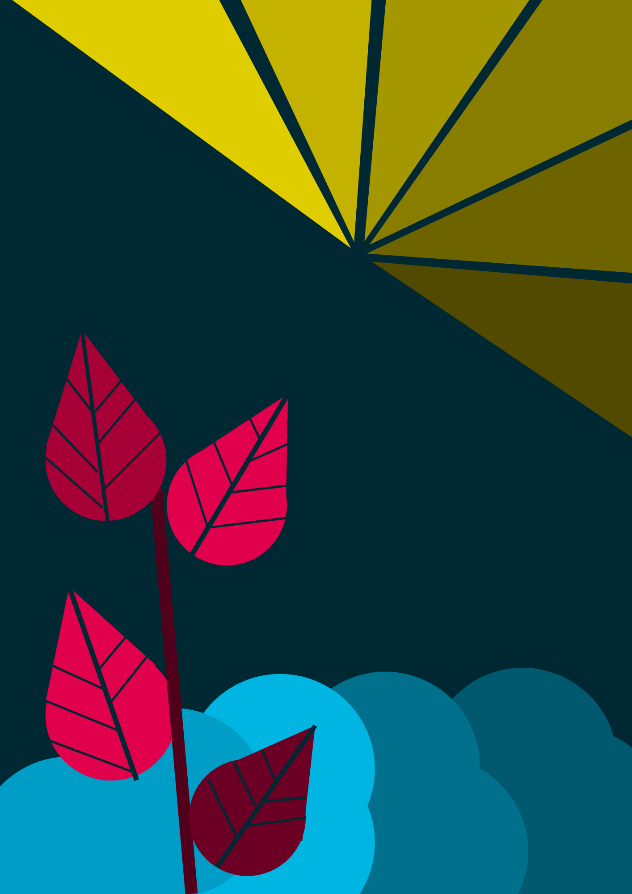
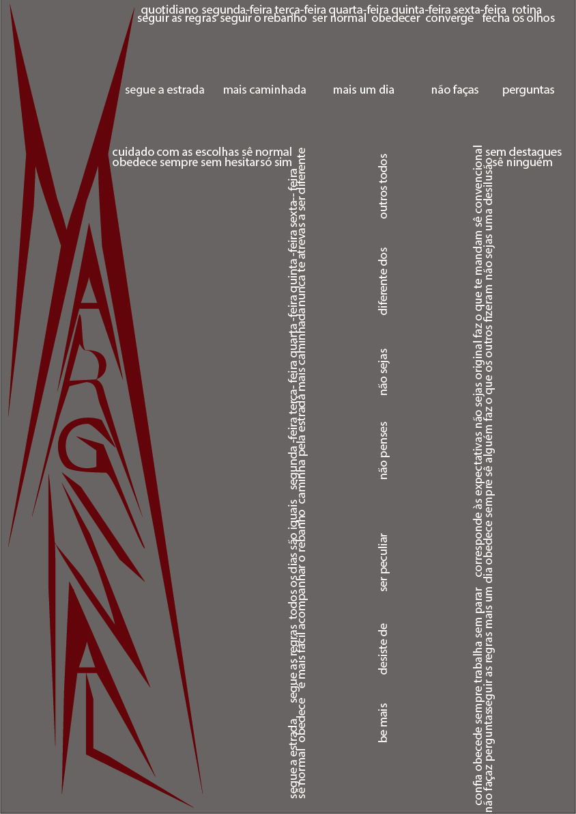
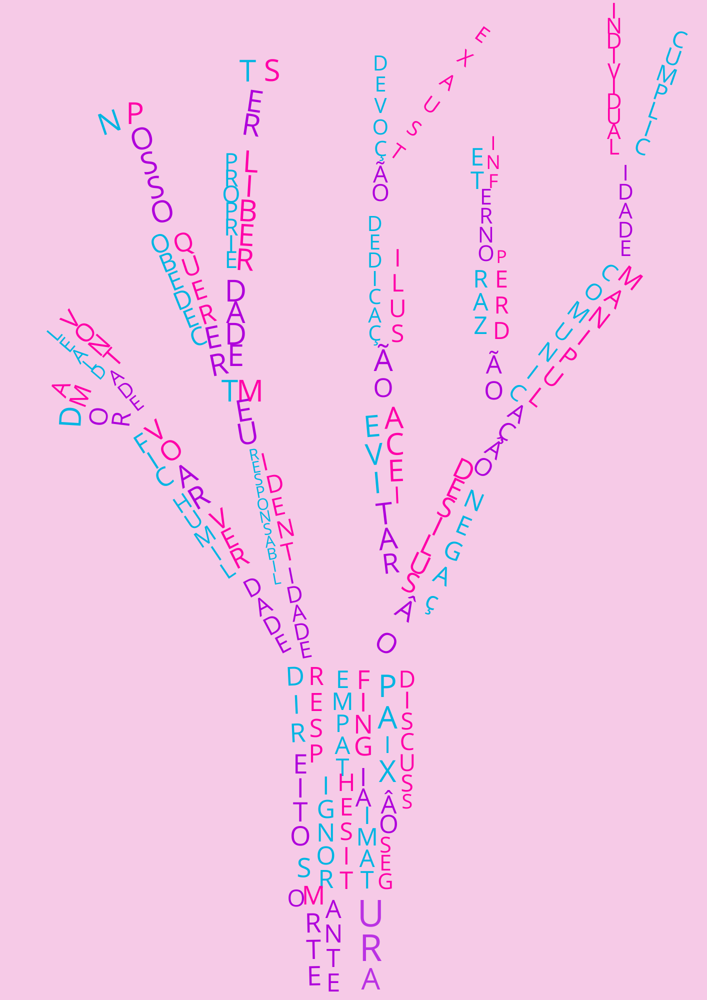
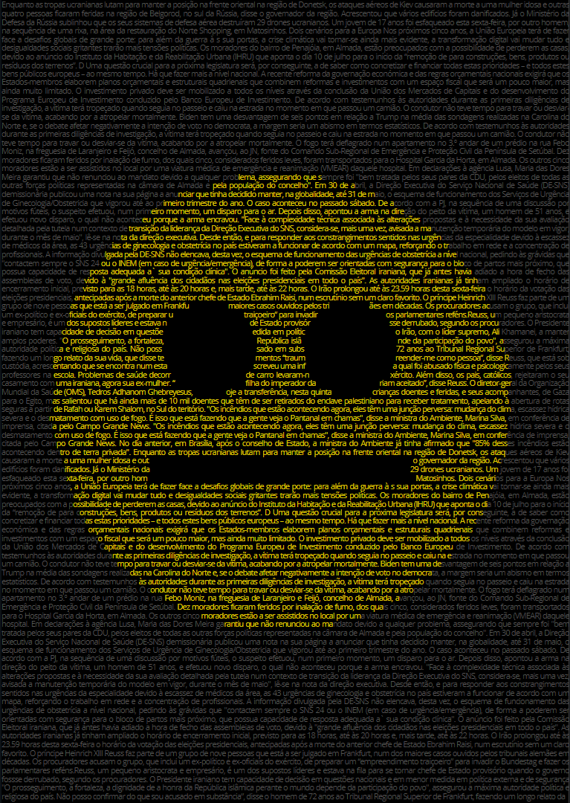
 Sobre Mim Programação e Desenvolvimento de Sites Web Design e Animação
Sobre Mim Programação e Desenvolvimento de Sites Web Design e Animação